전시 보러 갈래? - 이하령, 재훈, 황아림과 함께 1
<1. 날 것의 증거, Is this shit rare?
2. 친구들의 얼굴은 슬라이드 쇼처럼 지나가니까
3. 사용이 사랑의 동의어가 될 때, 나는
1. 날 것의 증거, Is this shit rare?
재훈: 혹시 문상훈 작가의 사진 작업 <손> 어떻게 보셨어요?
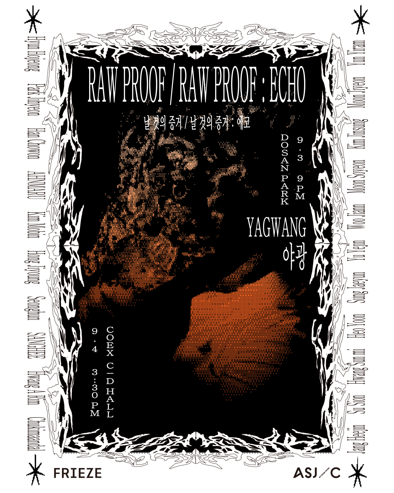
© 야광

사진: 홍지영, 제공: 야광
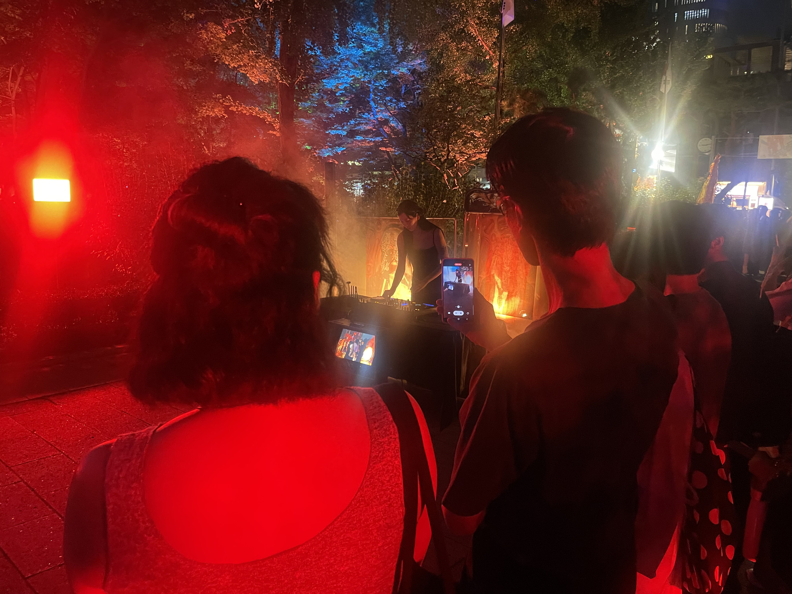


사진: 홍지영, 제공: 야광
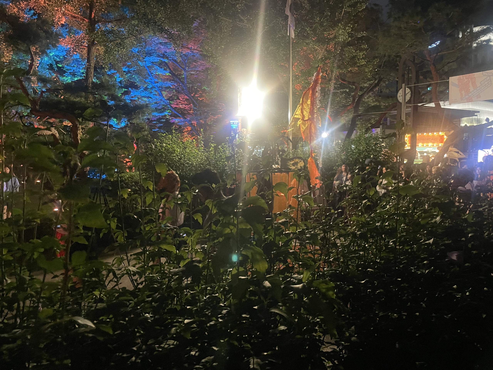 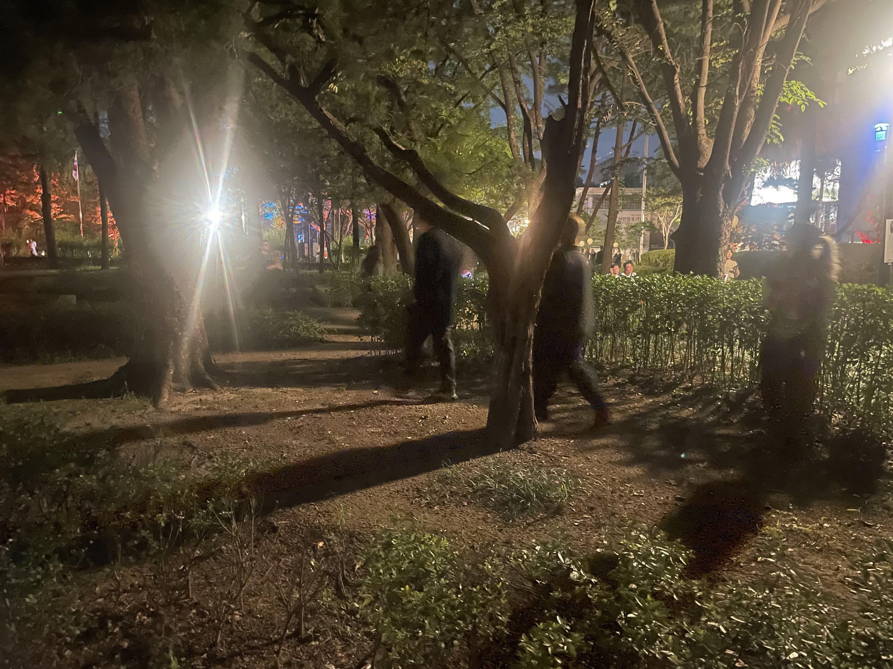

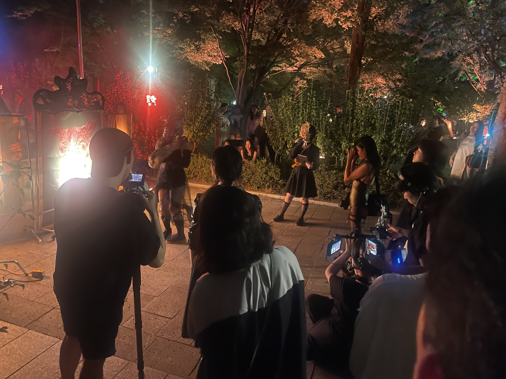 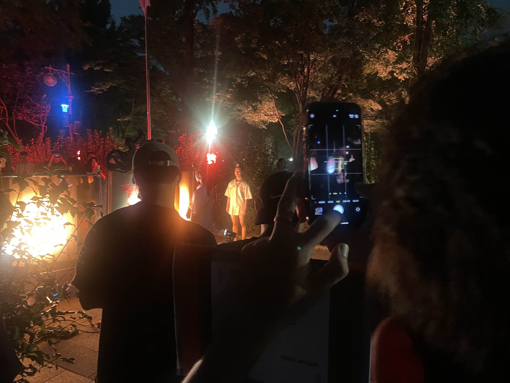
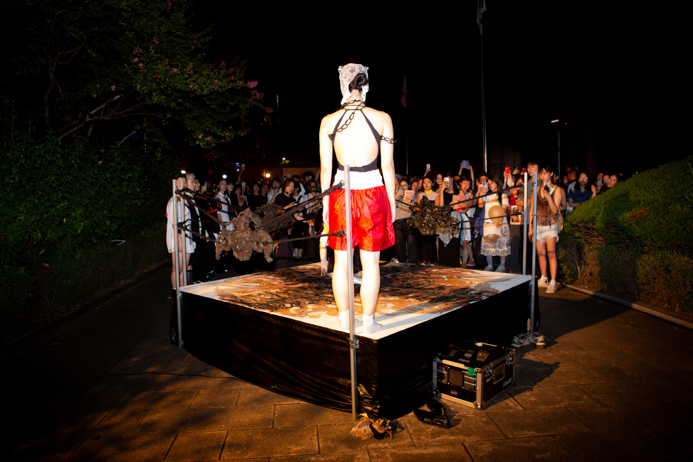
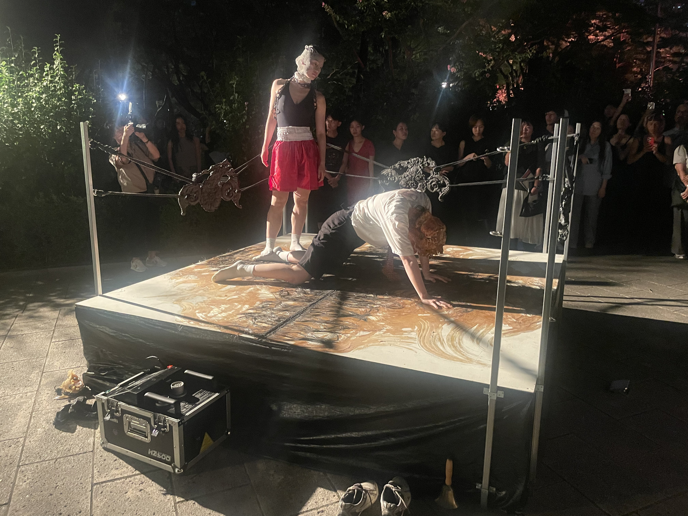 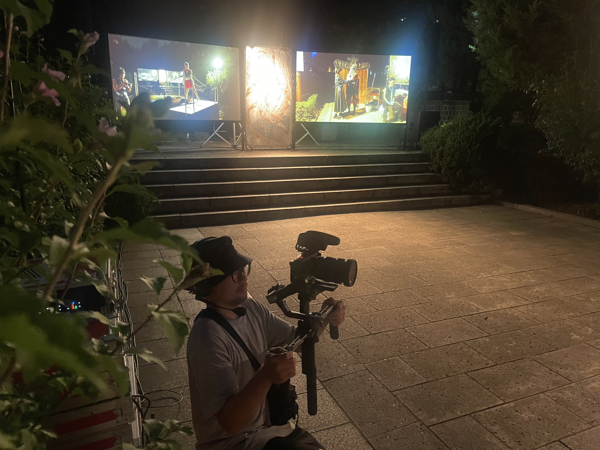 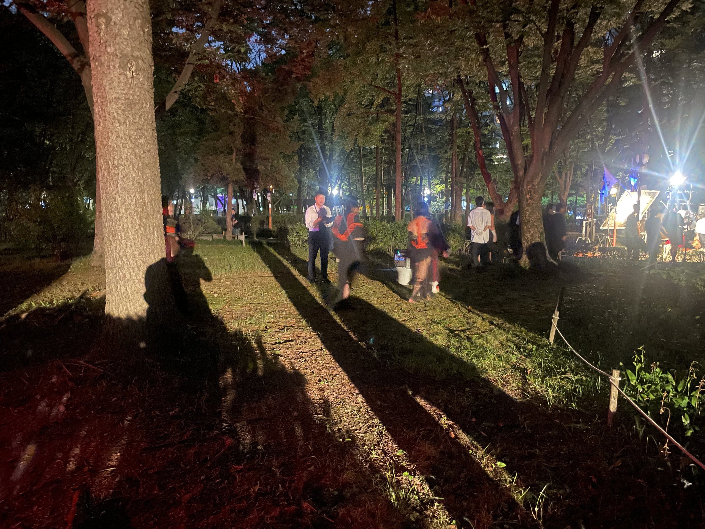
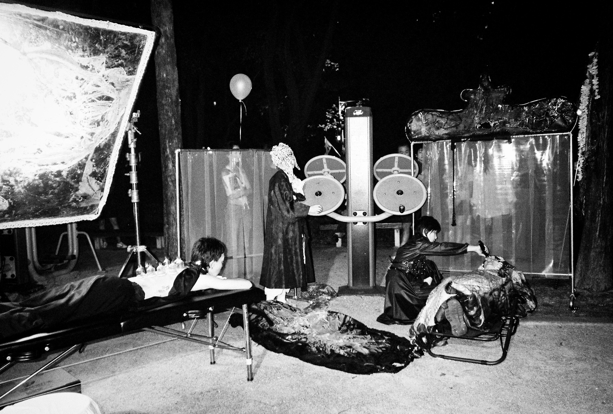

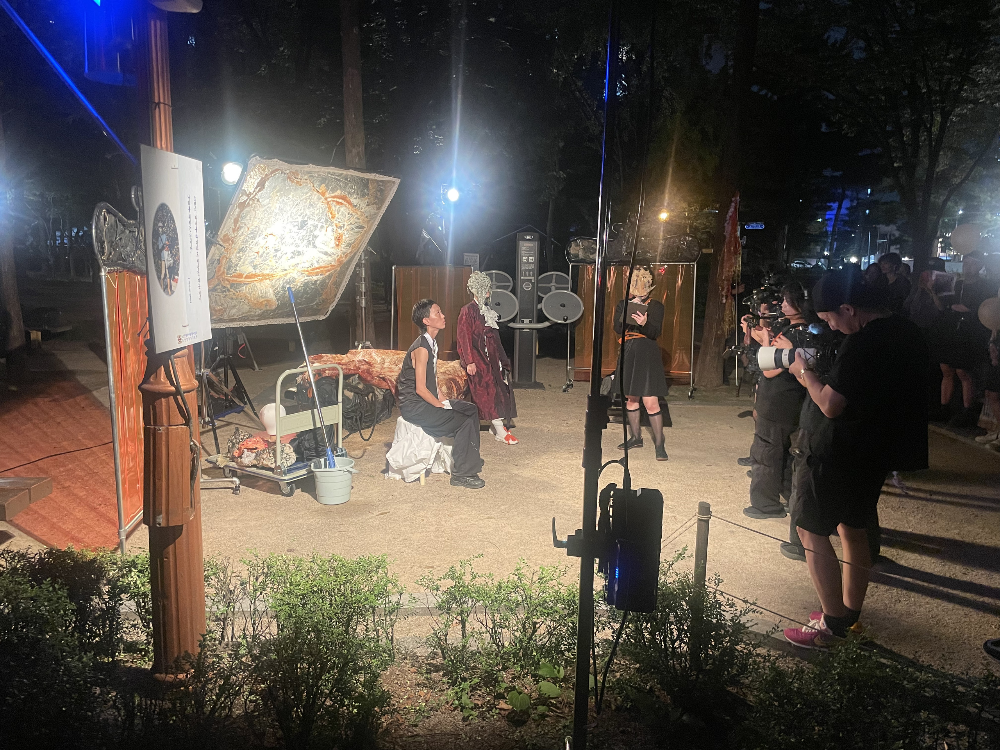 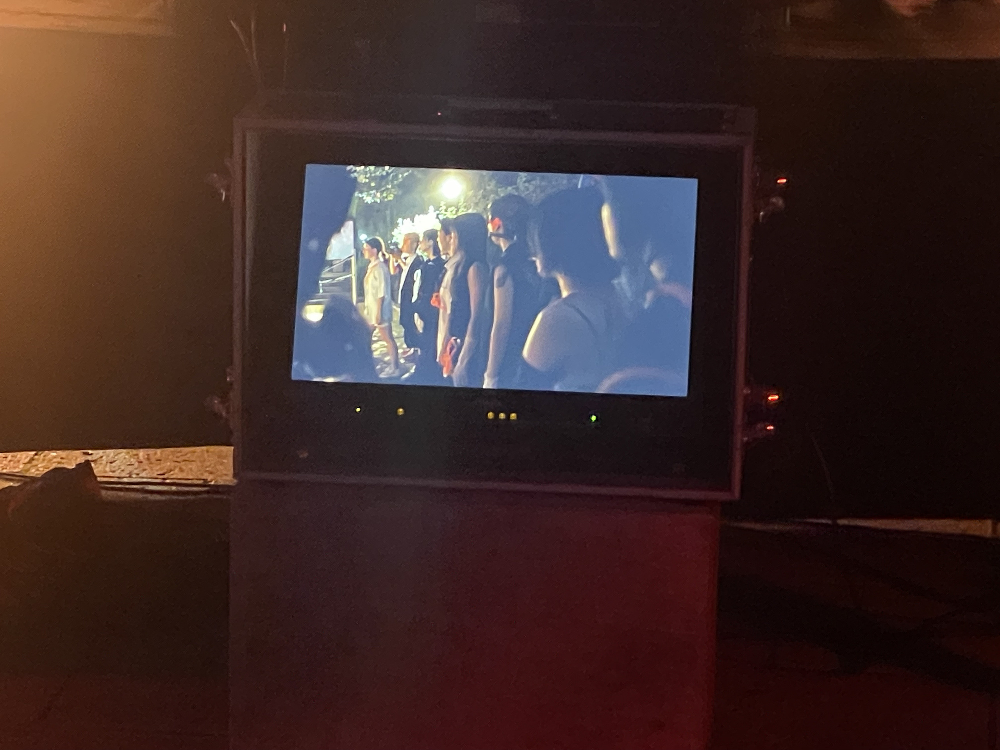
재훈: 도산공원 내에는 보행로가 있고 그 사이에 수목이나 식물이 자라나는 공터가 있잖아요. 동선에 관한 통제가 따로 있지 않아 관객들이 보행로와 공터를 가로지르며 퍼포먼스를 관람했어요. 퍼포먼스를 1열에서 바로 볼 수는 없었고 항상 다른 관객들 뒤에서 그 너머로 보듯이 봐야 됐을만큼 사람이 많았네요.
퍼포먼스의 방법론은 야광이 첫 번째 개인전 《윤활유Lubricant》에서 진행했던 퍼포먼스인
(2) 영상의 내용을 이루는 다양한 상황을 일정한 간격을 둔 채 동시에 연출한다.
(3) MC 역할을 맡은 진행자가 각 상황을 중계하며, DJ는 부스에서 음악을 틀며 흥을 돋군다.
(4) 촬영자들은 공연장을 활보하며 현장을 촬영하며, 그 장면들은 공연장 곳곳에 놓인 스크린에 동시 송출된다.
퍼포먼스를 다시 한번 보니 처음 봤을 때는 못 느꼈던 점을 볼 수 있기도 했어요. 도산 공원은 면적도 충분히 넓고 탁 트인 야외 공간이잖아요. 그래서 퍼포먼스를 직접 안/못 보더라도 이 공터에 온 사람들끼리 서로 인사 나누고 어울리는 장면들이 계속 보였어요. 저도 퍼포먼스 보면서 알던 사람들과 틈틈이 “어, 안녕하세요. 오! 안녕하세요.” 인사하면서 지나갔고요. 이 모습이 마치 인스타그램의 시각성과 몹시 유사하게 느껴졌습니다.
많은 관객으로 인해 퍼포먼스를 1열에서 보기 어려워 분열적인 공간이 조성되니 이 현장의 총체가 마치 인스타그램에 음악 붙여서 게시물 올리는 행위(퍼포먼스)나, 스토리 재공유(영상 재송출) 혹은 그 안팎에서 DM 나누는 모습(개더링)과 같은 시대 풍경과 닮아 보였어요. 너무 동시대적인 작업이라 약점이 없어 보였달까요?
이하령: 저는 이번에 <날 것의 증거> 못 봐서 궁금한데요. 동시 송출이라면 공원에 있는 화면에 영상이 송출되고 있었다는 뜻인가요?
황아림: 네, 맞아요.
제공: 야광
황아림: 안창호 기념관 공원 입구에서 앞으로 쭉 걷다 보면, 그 길 끝에 프로레슬링 형태의 세트이자 조각 작품인 <오줌조각 링>이 있어요. 그 세트에서 왼쪽 길로 들어가면 스크린3이 나오고, 그 맞은편에는 별 표시로 된 퍼포먼스 구역이 있고요. 그렇게 왼쪽에서 시작해서 추키만달 DJ 앞에 표시된 별 구역까지 행렬이 이어졌고, 행렬이 끝난 뒤에는 각 퍼포먼스 구역에서 총 세 개의 퍼포먼스가 진행됐어요.
재훈: 네. 그리고 DJ 쪽에도 작은 모니터가 하나 있었는데 거기서도 영상이 송출되고 있었어요.
이하령: 그러면 굳이 a 구역에 가지 않더라도 사람들이 스크린으로만 작업을 관람하는 경우도 있었나요?
재훈: 네. 사람이 너무 많다보니 그냥 스크린으로만 보는 사람들도 꽤 있었어요.
황아림: 야광의 두 번째 개인전 《카인드 : Kind》는 을지로에 있는 PS Center에서 열렸어요. 공간이 좀 분리된 느낌이 있었고, 한 섹션에서는 완전히 스크린에만 집중할 수 있는 환경이었거든요. 이번에는 야외에서 진행돼서 그런 건지 정확히는 모르겠지만, 제 기억으로는 스크린 앞에만 계속 서 있는 사람들은 그렇게 많지 않았어요. 퍼포먼스가 동시다발적으로 한 세 구역 정도에서 일어나니까, 그 구역들을 관객들이 둘러싸는 구도가 자연스럽게 만들어졌죠. 이번 도산공원 전시는 스크린을 설치하는 과정에서 여러 가지 물리적, 기술적, 행정적인 문제들이 있었겠다 싶었어요.
이하령: 도산공원이 공공장소다 보니 강남구와 소통을 하며 어디를 쓰고 말지를 합의하는 과정이 있었을 거라는 생각도 들어요.
황아림: 그럴지도 모르죠.
이하령: 그려주신 지도만 봤을 때는 ‘어디가 광장이지?’라는 질문이 자연스럽게 들었어요. 여기서 광장이란 사람들이 다 함께 모여 같은 풍경을 보는 장소를 말합니다. 처음 퍼포먼스 현장의 상을 떠올렸을 때는 이 공원 안에 광장이 있었을 것만 같다는 생각이 들었는데요. 막상 두 분의 이야기를 들으니 사실 광장이 없었을 수도 있겠다. 어디에서 보든 상관 없고, 다들 고개를 돌리고 있는 곳이 다르고. 관객마다 모든 게 달라 보였겠어요.
재훈: 맞아요. 관객들마다 저마다의 타임라인이 있었을 것이라 생각해요. 그리고 그게 야광이 첫 번째 개인전부터 조직해온 퍼포먼스의 방법론이고요.
2. 친구들의 얼굴은 슬라이드 쇼처럼 지나가니까
재훈: 퍼포먼스를 못 보셨다면 혹시 국제 갤러리 K2에 있던 야광의 영상 작업 <침입자>는 어떻게 보셨어요?
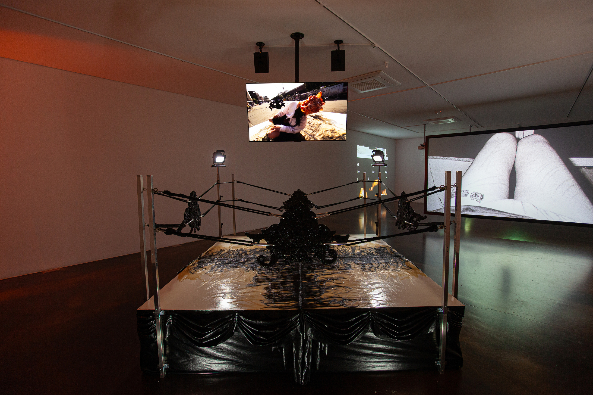사진: 남서원. 제공: 아트선재센터. 2025
ⓒ Art Sonje Center
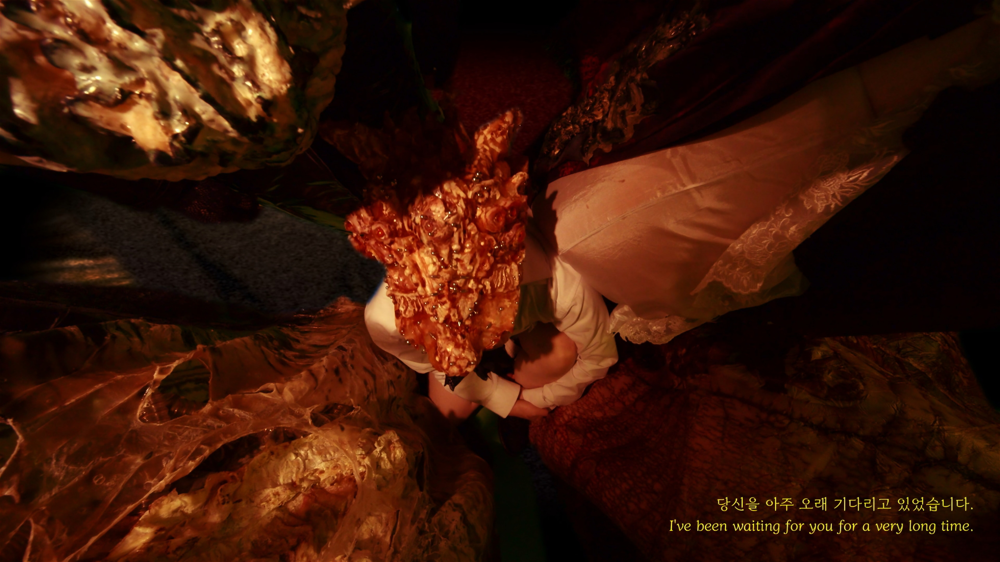
ⓒ 야광
이하령: 저는 그 영상을 《카인드 : Kind》에서 처음 봤었는데요. 그때보다 훨씬 집중해서 봤어요. 뭔가 바뀌었나? 그러니까 영상 작품이 더 디벨롭 된 건가? 하는 생각도 들었고요.
재훈: 어떤 점에서요?
이하령: 그게 작년 여름이었잖아요. 엄청 더웠고… 전시 공간 안의 라텍스 냄새가 생생하게 기억에 남아요. 저도 라텍스와 함께 녹아내릴 것 같았어요. 음, 저는 K2의 1층 전시장과 2층 전시장 중 2층을 볼 때 훨씬 집중할 수 있었어요. 그래서 2층에 오랜 시간 머물렀고 야광의 <침입자>도 <오줌조각 링> 앞에서 바닥에 철푸덕 앉은 채로 봤거든요. 그 공간에서는 그럴 수 있었기에 그렇게 편한 자세로 봤었어요.
황아림: 저도 2층이 집중이 잘 됐었어요. 야광의 <침입자>에 사용된 사운드가 홍지영과 성재윤의 사진과 잘 어울렸어요.
사진: 남서원. 제공: 아트선재센터. 2025
ⓒ Art Sonje Center
재훈: <오줌조각 링> 너머로 홍지영 작가의 흑백 사진이 보였던 장면은 저도 특별한 기억으로 갖고 있어요. <침입자>의 사운드가 영상의 내용에 따라 계속해서 바뀌잖아요. 그 모든 사운드, 이를테면 빠른 비트의 음악까지 모두 사진이랑 다 잘 어울린다고 말할 순 없겠지만, 조용하게 든든든든 거리는 소리는 사진과 정말 잘 어울렸어요.
황아림: 든든든든 대다가 아름다워지는 구간이 있었는데 그 부분에서 눈물이 날 정도로 감정이 복돋아 올라왔었어요. 셋의 작업이 한 자리에 있는 게 참 좋더라고요.
재훈: 홍지영 작가의 <다크룸> 연작이 현재 2024년 버전과 2025년 버전 있는 것으로 보여요. 2024년 버전이 작년에 열린 전시 《흑백논리》(뮤지엄헤드)에서 선보인 작품 맞죠? 그거 직접 못 가서 작가 웹사이트를 통해 봤는데요. 마지막에 황아림이랑 홍지영 키스하는 사진 보고
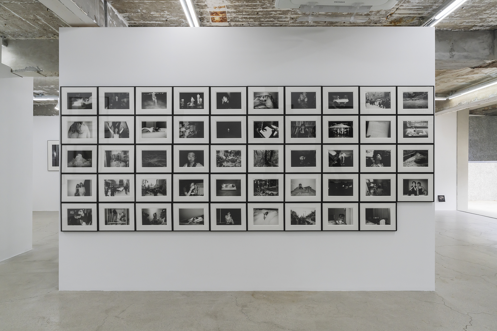
사진 제공: 뮤지엄 헤드, 촬영: 조준용
ⓒ Art Sonje Center
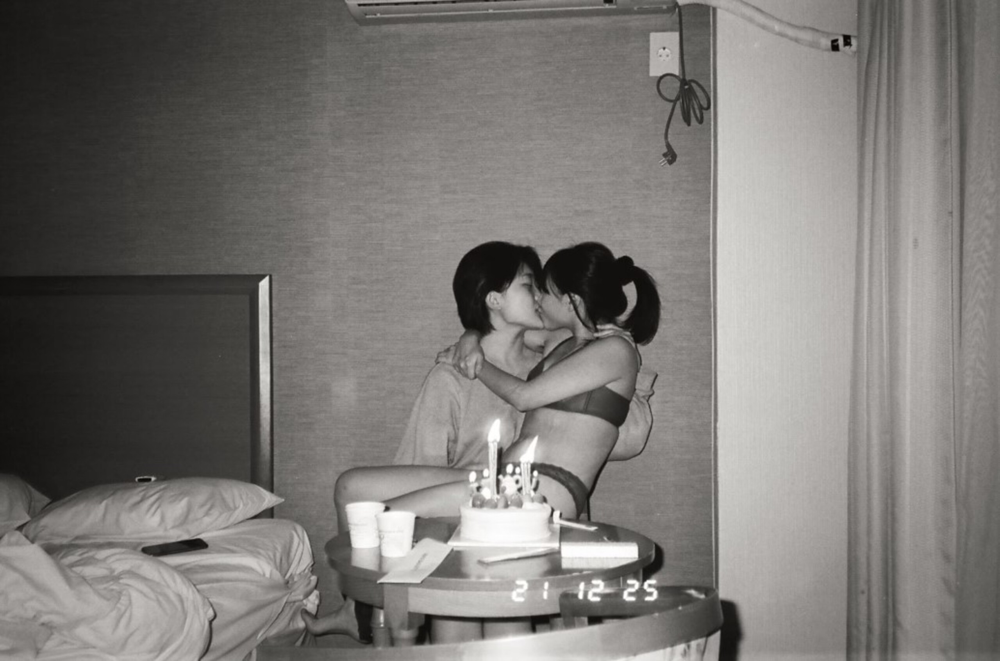
ⓒ 홍지영
‘와, 대박이다.’
황아림: 왜 대박이었어요?
재훈: 홍지영이 본인과 주변인의 삶을 흑백 사진으로 찍어온 일도 어느덧 세월이 꽤 쌓였잖아요. 저는 작가의 첫 사진집 『물의 시간들』에서 처음 보기 시작해서, 작가의 인스타그램에 업로드되는 사진들을 통해 이어보다 작가 홈페이지에서 그 후속편으로서 <다크룸>을 본 것인데요. 위 세 이야기에 담긴 홍지영과 황아림의 드라마를 타고 가다 <크리스마스의 호텔, 수안보>에 도착했을 때 좋은 드라마 한 편을 다 봤을 때 차오르는 감정을 느낄 수 있었어요. 근데 이건 웹사이트로 봤을 때의 감상이고요.
《오프사이트 2》에서 봤을 때는 작품의 형식에 대해 의아했던 점이 있었어요. 홍지영은 실물 프린트를 중요시하는 사진가잖아요. 디지털 사진은 사진으로 취급도 안 한다는 프린트 보수주의자로 알고 있는데요. 화질이 저화되는 슬라이드 쇼의 방식으로 사진을 상영하고 개별 사진에 대한 정보를 <다크 인덱스 2024/2025>로 빼놓은 경제적인 선택이 예산 문제로부터 비롯된 건가 싶더라고요.
황아림: 화질 저하는 스크린 프레임에 맞는 프로젝터가 없어서 어쩔 수 없이 발생한 기술적인 문제였던 것으로 알고 있어요. 지영은 매 작업마다 시도하고 싶은 형식이 분명히 있고, 프린트에 대한 집요함이 있는 작가라서 <다크 인덱스>를 옆에 함께 배치한 것 같아요.
저와 홍지영, 성재윤 작가가 소속된 콜렉티브 W/O F.(이하 우프) 팀원들은 예전부터 슬라이드 쇼에 대한 갈망이 항상 있었어요. 2023년 서울국제여성영화제에서 우프가 다 같이 로라 포이트러스 감독의 <모든 아름다움과 유혈사태>를 본 적이 있거든요. 낸 골딘을 다룬 다큐멘터리였는데, 그 영화를 보면서 슬라이드 쇼에 대한 아이디어를 얻게 됐어요. 클럽에서 우리 사진을 슬라이드 쇼로 보여주자는 이야기를 계속 해왔었는데, 지영과 재윤에게는 이번 전시가 그걸 실제로 시도해볼 수 있는 좋은 기회였던 거죠.
재훈: <다크 인덱스>에 적힌 사진의 캡션 제목을 보면 작가가 그 사진에서 보고 있는 포인트나 의미를 읽을 수 있어요. 예를 들어 ‘<비가 오는 날 산책을 마친 순이>, 서울, 2025’나 ‘<2022 트랜스젠더 추모의 날> 서울 용산, 2022’처럼요. 그리고 사진에 등장하는 사람들의 이름이 표기된 방식을 보면, ‘<눈 오는 새벽 예인과 아림>, 서울 이태원, 2024’에서 ‘예인’은 풀네임이 ‘곽예인’인데 ‘예인’이라고 쓰고, ‘<시장 옆 골목에 선 박자현과 리타>, 부산, 2024’에서 ’‘박자현’은 ‘박자현’ 그대로 쓰더라고요?
저는 그 선택을 홍지영 본인이 평소에 그 사람들을 어떻게 부르는지, 그 관계성이 반영된 선택이라고 읽었어요. 그리고 사진이 촬영된 장소에 관한 정보가 ‘남양주. 파주. 오키나와’와 같이 언급되어 있어 사진 일기 그 자체라고 생각하기도 했고요. 동시에 본 전시에서는 앞서 언급했던 참여 작가들 간의 네트워크를 적극적으로 가시화하는 역할을 한다고도 느꼈네요.
황아림: 이번 <오프사이트> 전시는 정말 참여 작가들과, 그들의 동료를 위한 전시라고 해도 과언이 아닐 것 같아요.
재훈: 그러게요. 하령님은 사진 작품들 어떻게 보셨어요?
이하령: 두 작가 모두 슬라이드 쇼의 형식을 취했는데, 두 분이 가진 것이 달라서 재밌었어요. 그중 홍지영 작가의 <다크 인덱스>가 기억에 남네요. 개별 사진의 인덱스를 디자인으로 정리해서 걸어놓으니 기념비 같다는 생각이 들었습니다. 야광과 성재윤 작가의 다채색 작업 사이에서 혼자 흑백이고, 두텁고 납작한 디자인이 주는 육중한 감각도 생각나요. 그래서 제게는 인덱스가 슬라이드 쇼의 부록이 아니라 독립적인 작품처럼 느껴졌어요. 개별 사진 뿐만 아니라, 그 사진들이 순서를 부여 받아 나열된 상태로 관객에게 보여지는 형식 역시 작업의 내용물로서 간주한다는 점이 강하게 와닿았고요.
사실 저는 사진만 단독으로 보여주는 전시를 본 경험이 거의 없거든요. 정지된 사진으로부터 이야기를 느낄 수 있는 감각이 저 자신에게 부족하다고 생각하고요. 근데 오늘 홍지영 작가의 사진을 보면서는, 앞으로도 이 분이 내러티브라고 부를 수 있을 법한 요소가 녹아든 작업을 계속 하지 않을까라는 궁금증과 기대감이 생겼어요.
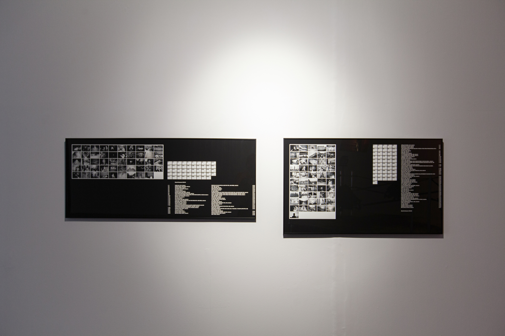
사진: 남서원. 제공: 아트선재센터. 2025
ⓒ Art Sonje Center
재훈: 듣고 보니 <다크룸>에는 사진이 넘어갈 때마다 느껴지는 운동감이 있었다는 점이 기억나네요. <다크 인덱스>는 그 사진을 배치한 사람의 편집자적인 관점이 더 부각된 작품 같고요.
황아림: 그 인덱스 도판은 지난 뮤지엄헤드 단체전 <흑백논리>에서 사용했던 도판 디자인의 형식을 일부 가져와 구성했어요.
예를 들어 인덱스 도판의 규격은 암실 프린트 사이즈인 50.8×60.9cm를 기준으로 했는데요. 나중에 암실 프린트 사진들과 함께 전시할 때 크기를 맞출 수 있다는 점에서도 적절하다고 생각했습니다.
3. 사용이 사랑의 동의어가 될 때, 나는
황아림: 지영과 저는 오랫동안 연인 관계였고, 좋은 동료, 협업자이기도 해요. 처음 만난 2019년 무렵을 떠올리면, 서로의 사진을 많이 찍었어요. 사진으로 맺어진 관계라고 해도 과언이 아니죠.
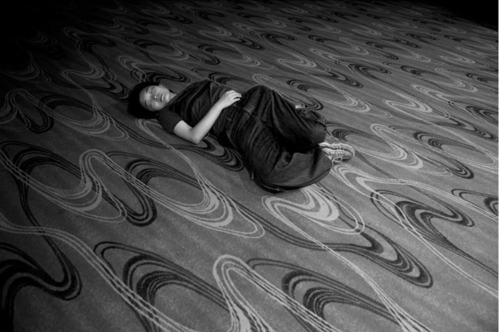 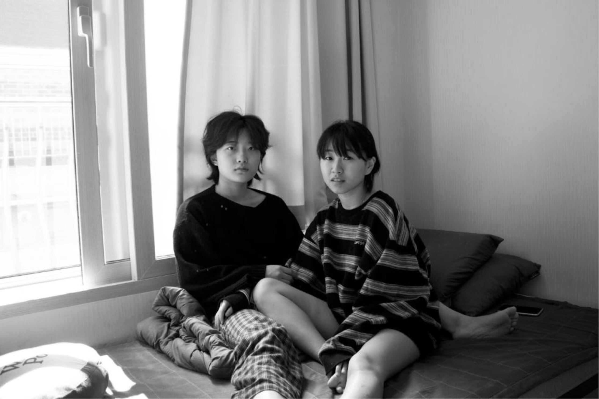 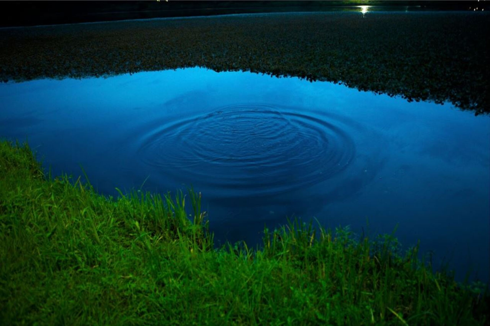
ⓒ 홍지영
황아림: 그 시기의 지영 사진은 지금과 비슷하면서도 달랐어요. 차이라면, 그때는 푸른빛과 분홍빛이 감도는 다소 강한 색감을 사용했다는 점이고요. 반면 지금까지 이어지는 공통점은 빛이라고 생각해요. 빛과 어둠의 농도를 섬세하게 감지하는 눈을 가진 사람이죠. 제가 생각했을 때 지영이 셔터를 누르는 순간은 빛이 스며들거나, 혹은 폭발하듯 쏟아져 들어올 때예요. 지영과 저는 그런 빛이 들어오는 풍경에 비슷하게 반응한다고 생각하는데, 그런 감각을 공유하기 때문에 서로의 시각적인 결과물에서 자연스럽게 상호작용할 수 있었던 것 같아요.
재훈: 아림님은 홍지영 작가의 결과물을 구현하는 테크니션인 셈이군요.
황아림: 그런 셈이죠.
이번 전시의 슬라이드쇼를 보면서, 지난 7년 동안 지영 사진의 피사체가 되었던 저의 경험을 돌아보게 됐어요. 사진은 현재를 잠시 과거로 데려가고, 그 과거는 이제 더 이상 내가 알던, 혹은 기억하던 시간이 아니게 된다고 생각해요. 나와 지영은 사진 속에서 아주 잠깐 동안 완벽한 연결감을 갖게 되고, 사진 안에 하나의 세계를 만들고, 그 안에 우리가 거주하고 있거든요. 아주 아름답고, 영원한 어떤 세계 안에요.
최근에 롤랑 바르트의 <애도 일기>를 읽고 있는데, 거기에 이런 말이 나와요. “그녀를 돌본 지난 6개월 동안에는 정말 그녀가 나의 모든 것이었다. 내가 글을 써왔다는 사실을 나는 완전히 잊어버렸었다. 나는 오직 그녀를 위해서만 존재했다. 그런데 돌아가시기 전에는 그녀가 그랬었다. 내가 글을 쓸 수 있도록 그녀는 자신을 보이지 않는 사람으로 만들었다.”
지영은 제가 사진 안에 자연스럽게 있을 수 있도록, 자신과 카메라를 한 몸처럼 만들어서 스스로를 보이지 않는 사람으로 만들었고, 저는 지영이 사진을 찍을 수 있도록 저 자신을 보이지 않는 사람으로 만들었어요. 사진을 찍는 순간만큼은 서로가 서로를 위해서만 존재하는 상태였던 거죠.
<물의 시간들>을 위해 촬영을 도왔을 때는 사실 지영한테 짜증도 많이 내고, 찍히기 싫다고 느꼈던 순간도 많았거든요. 그 뒤로 몇 년의 시간이 지나서 우리가 드디어 서로를 지울 수 있었던 건, 아무래도 지영이 사진 찍기를 계속해왔기 때문이겠죠. 그 점이 저는 너무 고마워요.
재훈: 네, 막 엽사 같은 것도 꽤 있잖아요. 찍는 순간에는 즐거웠지만 되돌아봤을 때 남으면 곤란한 사진들도 있을텐데요. 그런 점까지도 포용하시나봐요.
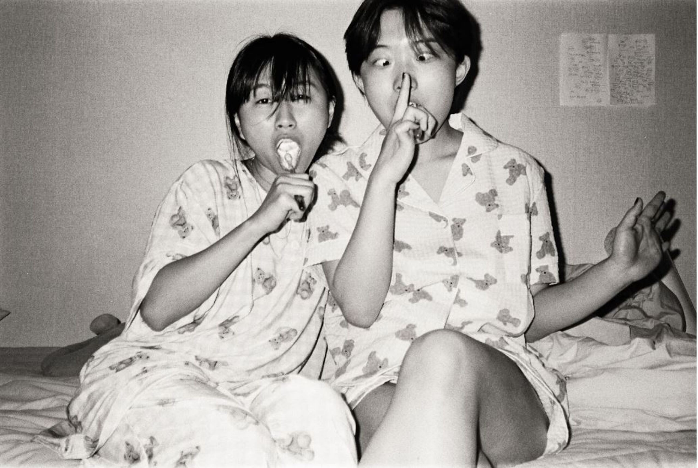
ⓒ 홍지영
황아림: 네, 아무래도 같이 산 세월이 오래되다 보니까 같이 있으면 그냥 서로 너무 편해요. 그런데 그 기억과 시간을 흩어지게 두는 게 아니라, 도판 위에서 정리하고 번호를 매겼듯이 사진을 찍으면서 우리의 관계가 하나의 이론처럼 모습을 갖춰가는 걸 보는 게 저는 좋아요.
재훈: 홍지영이 <다크룸>에서 보여준 사진은 둘의 생활에서 자연스럽게 이루어진 행동의 결과물이잖아요. 마치 사람이 물을 마시듯이요.
황아림: 네 맞아요.
재훈: 말씀하신 것처럼 그 시간도 충분히 쌓였죠. 그렇게 모인 사진 조각들이 하나의 큰 체계를 이루어냈다는 점에서 이론이라는 단어를 사용하신 건가요?
황아림: 맞아요. 그리고 그 사진들이 전시장이라는 공적공간에서 공유되는 것도 좋고, 그 사진에 들러붙어서 살고 있는 것도 좋아요.
재훈: 이해됐어요. 근데 사진에 들러붙어서 살게 되는 일이 좋은 이유는 뭐에요?
황아림: 저는 제가 너덜너덜해질 정도로 찍히고, 쓰이는 게 좋은 것 같아요. 내가 나를 내어주지 않으면, 누가 자기를 내어주겠어요?
재훈: 하령님도 동료들과 서로 품앗이로 전시할 때 설치 도와주는 식으로 서로의 활동에 적잖게 참여하시잖아요. 그런 점에서 비슷한 면이 없지 않아 있는데, 어떻게 생각하세요?
이하령: 제가 친구들에게 사용되고 제가 친구들을 사용하는 일이요?
재훈: 네.
이하령: 동료들과 주고받는 게 많아질수록 작업에서 자신들끼리만 알 수 있는 자기다움, 고집이 보이는 것 같아요. 가까운 사람일수록 내가 저지른 일을 들키는 게 두려워서인지, 도움을 많이 받았던 나의 작업을 볼 때 부끄러움을 느낍니다.
앞서 아림 님께서 현실 관계들을 담은 사진이 모여 이론이 된다고 말씀하신 게 흥미로워요. 저는 아직 고유명사도 아니고 또 완전히 익명도 아닌, 현실 속 주변인들이 창작물에서 등장할 때의 이상한 비약 따위에 관심이 있어요. 주변인의 얼굴을 작업에 끼워넣으면 작업에 대한 애증과 그에 대한 애증에 혼란이 와서 상태가 지저분해지는데, 그 지저분함이 제가 속한 세계에서 일상적인 감각 같은데요.
만든 뒤에는 반드시 물어봐야 해요. “나 이런 거 했는데 여기에 써도 돼?” 그러면 대부분 “ㅇㅇ”라고 답하며 주고받는 관계가 되어버린 느낌이에요.
재훈: 근데 그게 이를 테면 MoMA나 Tate처럼 더 큰 무대에서 더 많은 사람들을 만나게 되면 또 다른 이야기가 되지 않을까요? 그러면 어떨 것 같아요?
이하령: 그 사진을 사용하는 일에 이미 허락을 받았는데, 더 많은 관객이 보는 장소로 옮겨갔을 때 한 번 더 거쳐야 되는 관문이 있느냐는 질문이죠? 겪어봐야 알 것 같은데요.
재훈: 홍지영 작가가 할머니가 될 때까지 작업을 계속한다면, 그녀의 일상 사진은 작가의 초기 연작들에 계속 포함되는 셈이잖아요. 나중에 회고전을 연다고 하면 들어갈 수밖에 없을 텐데.
황아림: ‘허락’이라는 단어는 적절하지 않은 것 같아요. 서로가 서로의 피사체가 되는 일에 이미 암묵적으로 동의하고 있기 때문에, 그냥 당연하게 서로를 내어주는 거죠. 작업으로 사랑하는 방식 아닐까요. 그게 누군가를 사랑하는 방식이라면, 그냥 사랑하게 내버려두는 거죠.
재훈: 그렇구나
이하령: 답은 이미 주변인의 얼굴을 사용한 그 사건에, 바로 그 순정에 있다고 생각해요. 내가 그들의 얼굴을 담았던 선택 자체가, 그 이미지의 존재가 낯선 퍼블릭에게 보여질 수 있는 이유라고 느껴져요.
재훈: 찍는 순간부터요?
이하령: 네, 그 얼굴을 담기를 의도하는 순간부터요. 그들과 무언가를 함께 하는 행위 자체에 이미 무언가가 녹아 있는 의식인 거죠. 그렇다면 내 작업이 더 멀거나 더 큰 세계로 나아간다고 해서 거기에 걸맞은 오피셜함을 입을 이유는 없다고 생각해요. 말해놓고 보니, 가까운 이의 얼굴을 담는 상황 속 내 의도에는 피사체 뿐만 아니라 사진을 찍는 작금의 로우함(기술력 부족, 질감 등등)도 동봉되어 있다는 생각도 듭니다. 그러니까, 그 로우함마저 간직하고 싶은 나의 대상인 거에요.
황아림: 우리는 서로를 아주 가까운 거리에서 보고 있고, 아마 앞으로도 계속 이런 상태일 것 같고, 이 관계의 밀도 자체가 작업의 핵심이라고 생각해서, 그 결과물이 나중에 어디에서 전시되느냐는 크게 상관없다고 느끼는 거죠?
재훈: 그게 태도다.
이하령: 네, 맞아요. 태도.
황아림: 우리가 이제 막 커가는 신진 작가여서 친구들의 얼굴을 쓴 게 아니라 ‘앞으로도 우리는 이 친구들의 얼굴을 쓸 거다’라는 태도인 것 같아요. 퀴어라서 더 그런 것 같기도 하고요.
이하령: 그 말씀이 제가 자주 떠올리는 태도를 엄청 잘 정리해 주신 것 같아요. 방금.
재훈: ‘퀴어라서 더 그런 것 같기도 하고’는 뭐예요?
황아림: 퀴어는 제도로 묶일 수 없는 관계잖아요. 그러니까 무엇으로도 증명할 수 없는 관계 맺기를 계속할 수밖에 없고요. 너무 소중한 이들을 붙잡아 두기 위해 서로의 모습을 계속 사진으로 남기게 되는 게 아닐까요? 동시에 퀴어들은 외롭고 심심하니까, 그냥 같이 놀 친구들이 필요한 거예요. 그래서 맨날 같이 붙어 있게 되고, 내 삶과 그들의 삶이 분리되지 않은 채로 흘러가게 되는 것 같아요.
전시 보러 갈래? - 이하령, 재훈, 황아림과 함께 (2)
이하령, 재훈, 황아림
2025.09.09